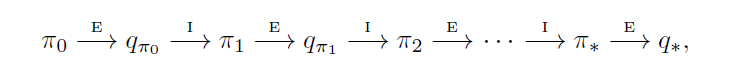
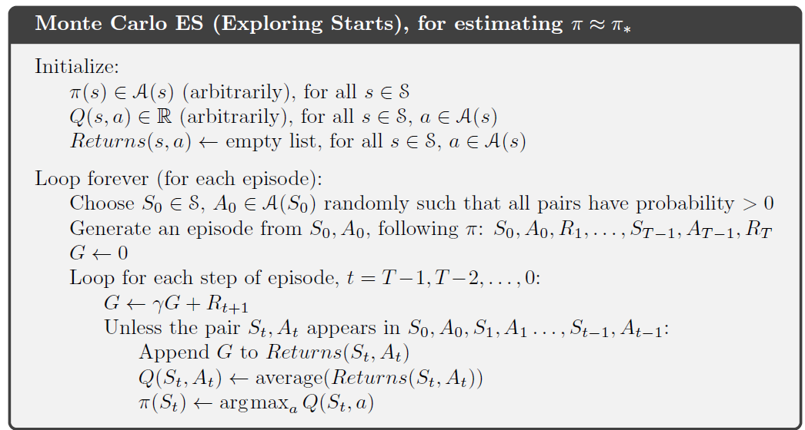
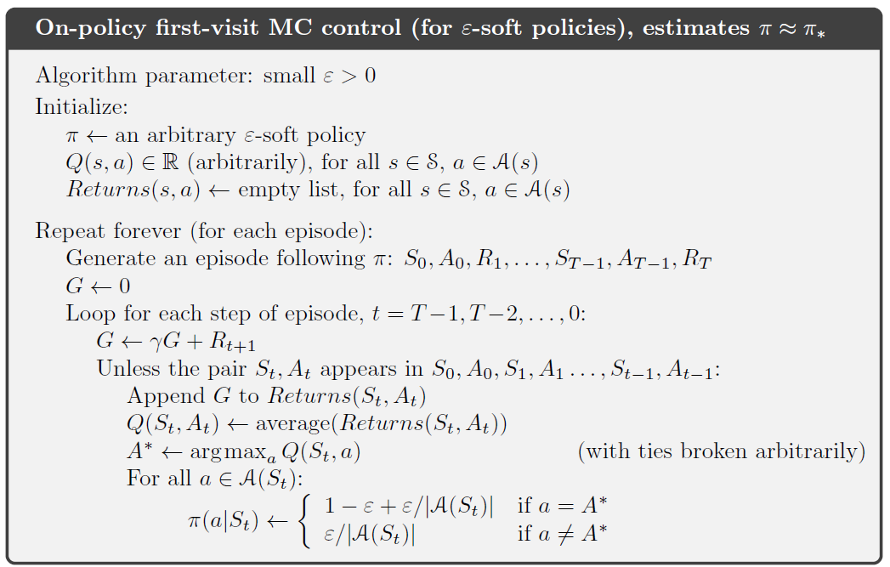

对应章节：《Reinforcement Learning: An Introduction》第二版 Chap 5
蒙特卡洛方法不需要环境的信息，只需要经验（experience—sample sequences of states, actions, and rewards from actual or simulated interaction with an environment.）
Monte Carlo methods are ways of solving the reinforcement learning problem based on averaging sample returns. To ensure that well-defined returns are available, here we define Monte Carlo methods only for episodic tasks.
5.1 Monte Carlo Prediction
有两种方法，一种是“first-visit“,把整个片段集所有第一次访问到状态时的returns做平均化处理，来估计$v_\pi(s)$的值另一种是”
every visit”，把整个片段集中所有访问到s状态时的returns取平均，来估计$v_\pi(s)$的值。两种方法都有应用，下给出first-visit，在9和12章介绍every-visit
每一次返回平均值都是其本身的无偏估计，标准偏差在$\sqrt{\frac{1}{n}}$内
蒙特卡洛算法每一次运行都是独立的，也就是说他不是"bootstrap"的
5.2 Monte Carlo Estimation of Action Values
如何估计$q_\pi(s,a)$, 同上一小节一样也是first-visit与every-visit两种方式
不过有一个问题在于如何保证所有的action都被考虑到，这就是之前第二章提到的如何保持exploit和explore的关系的问题，称为“maintaining exloration“问题，一种解决方式是对于每一个state–action pair，都给予其一定的概率作为一个episode的起点，这样当取样次数趋于无限的时候，每一个pair的取样次数也趋于无限了，这种方式的假设称为exploring starts.
但是这样有一个问题就是"it cannot be relied upon in general, particularly when learning directly from actual interaction with an environment.", 此时一种常见的策略是调整policy，使得对于一个状态，所有的action都有一定的概率发生
5.3 Monte Carlo Control
蒙特卡洛方法估计最优policies的方法和DP差不多：先迭代value function使之逼近当前policy的真实value function，然后基于更新后的value function进行policy improvement，直到最终policy基本不再变化
由于我们在此处估计的是$q_\pi(s,a)$，就不需要额外的model来确定最优的action了，可以直接根据$\pi(s)=\arg \max_a q(s, a)$来确定
为了更具备实际意义，我们要考虑如何去掉infinte number of episodes 的假设 ，一种方式是设立一个极小值，当两次policy evaluation的差别小于这个值的时候，认为此次policy evaluation结束，这种方式在小规模情况下很好，但是数据规模较大时仍然会需要比较多次。另一种方式就是放弃完整的policy evaluation，类似于4.6中的value iteration
以下算法仍然基于了exploring starts 假设
5.4 Monte Carlo Control without Exploring Starts
on-policy: 直接优化或评价目标策略
对于on-policy策略而言，对于所有的pair有$\pi(a|s) \ge \frac{\varepsilon}{|\mathcal A(s)|}$
采取第二章中提到的类似的方法，以$p= 1- \varepsilon + \frac{\varepsilon}{|\mathcal A(s)|}$的概率选取原先确定的action
此处省略一大段，如果有兴趣看相关证明的可以自己看书
5.5 Off-policy Prediction via Importance Sampling
在on-policy中，由于我们需要explore所有的action，这也就导致我们在一些时候会选择非最优的情况，故而我们有了off-policy的想法
off-policy: 有两个策略，一个叫行为策略 $b$（behavior policy），另一个叫做目标策略$\pi$（target policy），从behavior policy生成的episodes中学习target policy的过程，叫做off-policy learning。
关于off-policy与on-policy的应用比较
Throughout the rest of this book we consider both on-policy and off-policy methods. On-policy methods are generally simpler and are considered first. Off-policy methods require additional concepts and notation, and because the data is due to a di↵erent policy, off-policy methods are often of greater variance and are slower to converge. On the other hand, off-policy methods are more powerful and general.They include on-policy methods as the special case in which the target and behavior policies are the same. Off-policy methods also have a variety of additional uses in applications. For example, they can often be applied to learn from data generated by a conventional non-learning controller, or from a human expert. Off-policy learning is also seen by some as key to learning multi-step predictive models of the world’s dynamics
下面又是一大波我不想看的数学知识
TODO()以后一定补
因此有两种方式，可以取：
一种是取平均（ordinary importance sampling）
$$V(s) = \frac{\sum_{t \in \mathcal T(s)} \rho_t G_t}{|\mathcal T(s)|}$$
另一种是加权平均（weighted average）
$$V(s) = \frac{\sum_{t \in \mathcal T(s)} \rho_t G_t}{\sum_{t \in \mathcal T(s)} \rho_t}$$